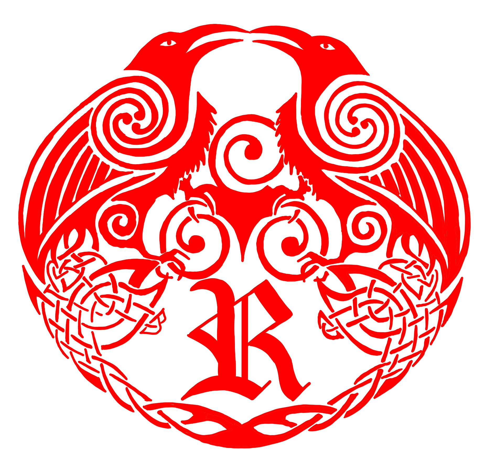
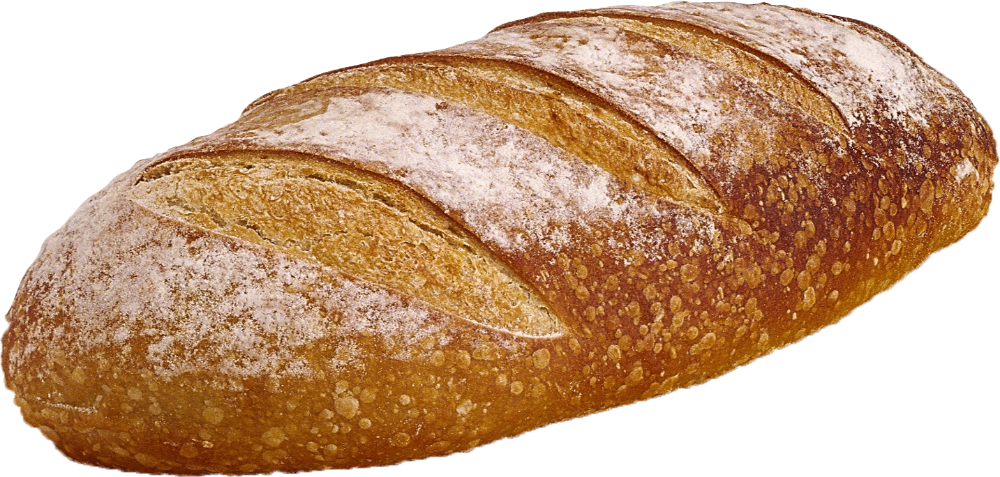
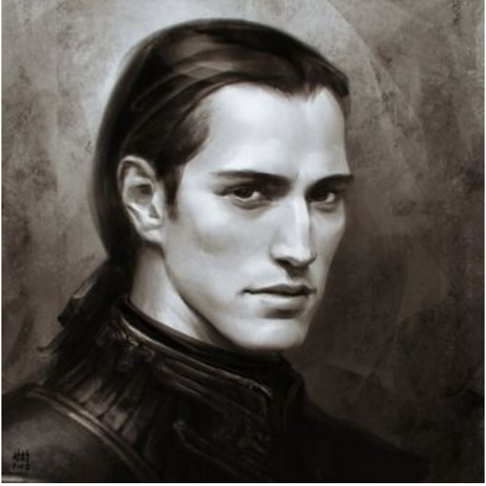
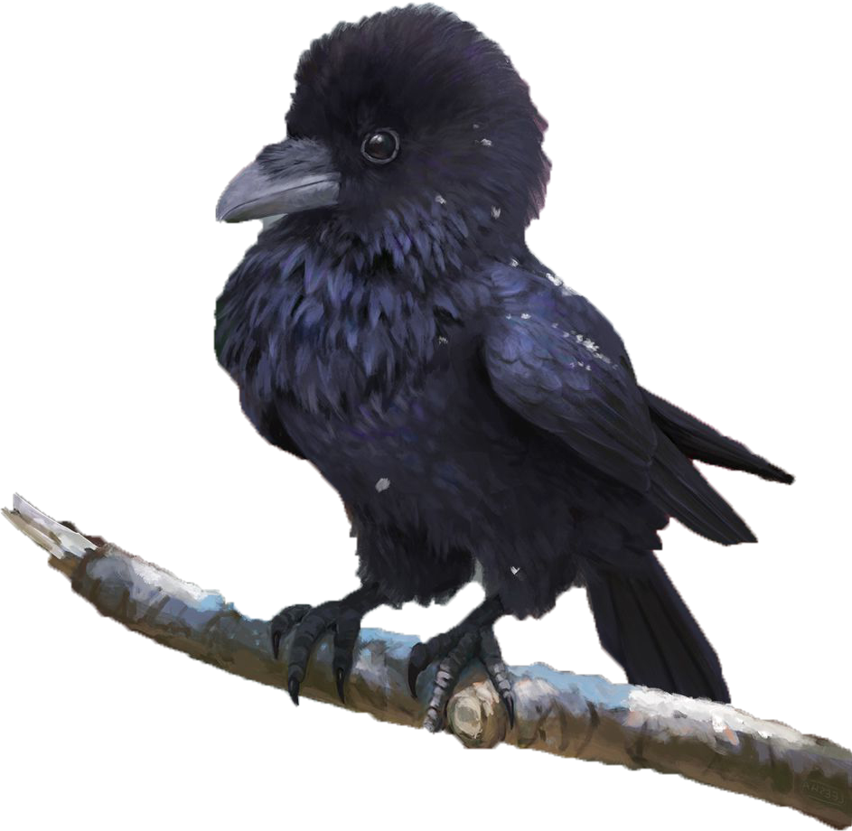

Allow Us to fill the longing in your Heart as you read and discover Our Truths, Mission, and Practices.
"I am free. It gave me a new purpose and a reason to soar." - Thomas P.

~ How We Began ~
The Black Raven, whom we look to for guidance, has been of our world since before the records of history were able to be written. It is believed that the origins of the Raven came after the fall in the Garden of Eden. Only then did the Raven take flight from the confines of the garden and was able to explore the world freely.
Because of its bravery and vigor, the Raven given the gift of foresight and many other worldly powers we as humans cannot comprehend and us as followers do not question. The Raven’s spirit came to serve under the deep spirit of the Wendigo for some time. The Raven, after centuries of serving under an unjust spirit, split itself from the shackles of the Wendigo and flew free once more.
The Raven after splitting from the Wendigo found itself amidst a human by the name of Oberon Iagoson. Seeing this human in misfortune he took pity on Oberon, and granted him fortune and wellbeing. Oberon in thanksgiving to this freeing savior in turn began the Order of the Black Raven so others may know the power of this giving spirit and to serve it.
We are now still strong in our servitude to the great Black Raven as its powers bring all who serve it and follow its rules fortune and favor to their lives.
~ Our Mission ~
We seek to bring together all who are longing for something more, or a freedom in which they do not posses. We welcome all to join our family and make this place their home. We give hope to all that are desuetude, fortune and favor to those who serve well. And extinguish the fear of darkness ahead. We have many branches thoughout the world that extend over all continents. One should only seek and they will find us. And we can show them the ways to serve, obay, and soar to new horizons beyond the edge of the night.
"The more I ask, the more I serve. I have never had such purpose in my life." - Tyler G.
"I no longer am lonely with the suppprtive community." - Jane L.
"The Rituals bring me closer to the Truth." - Parker M.
"Comforts me to know I'm always being watched." - Kelly J.
"Changed my life. And I have never looked back!" -Paul O.
Upcoming Events:

~ Thanksgiving Bread - Nov. 26th from 09:00 - 15:00
We will be giving out loaves of bread to families who have not yet purchased their offertory Thanksgiving bread for Our Patron. Please come by and make sure you offer up your thanks on this day.
~ Black Friday Jubilee! Nov. 27th @ 17:00
Bring your friends and family as we Celibrate! Our annual Black Friday BBQ and more, as a reminder that our true riches that come from our Spiritual Patron.
ALL followers heavily encouraged to attend the celebration of the solstice! Must be wearing proper ceremonial garbs, or you will not be permitted on the premise. Please arrive 30 mins before time above. You will not be permitted not he premise if you do not arrive on time. Food and beverages will be sold though out the event. Please bring proper offering for the evening Fire. See you there!
~ Christmas Brunch - Dec. 24th @ 09:00 - 14:00
Come one come all to Our Christmas Brunch! Food, Drinks, Fellowship, games, and Music to help celebrate your Christmas Eve. Some of our communities craft vendors will be selling some of their wears and goods, please come and support them! Donations to our Patron and our Family are also appreciated.
~ End of 2020 Countdown! - Dec. 31st @ 18:00
We will be having another offertory bonfire to celebrate the end of 2020 and welcoming in the new year and new hope of 2021. May the new year bring us all good fortune through our service to the Raven.
~ About Our Founder ~

Oberon Iagoson
Oberon Iagoson came form a village no long around today. His father, Rodrick Iagoson, was but a humble father and his mother, Sarah, a seamstress. He had 3 sisters and 3 brothers. Shelby the eldest followed by Joshua, Katie, Liam, Edward, and Tabitha the youngest. Oberon was the middle child of all of these siblings. His family and his home was his life. Each morning before dawn, he would awaken to great each sunrise. And with each sunrise there was a Raven he would spot flying off into the distance. As he grew The young man became very wise int he ways of the world around him, an soon he made the had disco to leave his family and pursue education. It was not but a few months that he was gone when he received a letter form his village with terrible news. A house fire int he nigh had consumed his families home and with it, his family. Oberon returned to his village immediately only to find there was nothing left of his home or his family. Crushed with the weight of all he had lost, a Raven descended downside him. But what Oberon saw was no ordinary raven, but a being that was unable to be described in words. The Sprit took pity on Oberon and gave him gifts and a new home to help with eh loss of all he had. The raven ins rucked him to build a new family around him and that it will all flourish. There will be no more loss if Oberon kept to his rituals like he was instructed and respected his Patron. And Oberon did just that. And from the ashes of his home came a new order and family, of the Black Raven.

Our Organizations:
~ Adult Ministry
- Saturdays from 17:00 - 18:30. Please register for a small group before attending.
~Young Adult Ministry
- Tuesdays and Thursdays from 17:00 - 18:30. All are Welcome.
~ Youth Ministry
- Mondays, Wednesdays, and Fridays from 18:30 - 21:00. Food, Truth, Games and more!
~ Childrens Ministries
- Sundays from 09:00 - 11:00. Helping our youth begin to soar!
Funerals
Please call the front office to reserve a time for a Funeral ritual.
Our Creed
The Black Raven binds us to each other and our destinies.
For it is all knowing and all powerful, it sees all.
We all are of One family from the same tree.
Our branches reach out for all to shelter in.
The darkness is not to be feared but just a vale over the good works.
Black is not a mournful color but a reminder of beauty that is hidden in night.
Claws are careful tools for friendship and protection.
Death is it not to be feared but embraced, for the final flight of one's soul.